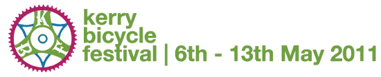

FRAME: ART CYCLES // RACE ACROSS AMERICA // SQUARE WHEELS // THE JOCULATOR // CYCLETHERAPY // NATURE CYCLE // PICNIC CYCLE TO FENIT // MEALS ON WHEELS // CYCLE-ACOUSTIC WORKSHOP // MAEVE HIGGINS // MY LOVELY BICYCLE // MAGICAL MYSTERY TOUR ... ON BIKES // CYCLING ADVOCACY FORUM // SLOW BICYCLE RACE // CYCLING SHORTS // FESTIVAL CLUB //
Call ’11
Call for submissions
The Kerry Bicycle Festival which is currently in it 4th year seeks submissions of both bike related short films and bike themed art works for this years festival, which takes place from the 6th to the 13th of May.
Visual Art:
Last year over 30 artists contributed to Frame X and we had an amazing
exhibition. Work included photography, painting, paper cut, sculpture, and
video. You can see get a feel for last years show , and a 3d view of the space .
This year we are collaborating with the Cork Cycling Arts Festival so as well as a 3 week run in Siamsa Tire, the show will travel to Cork in July. So with one easy entry, your art will reach 1000s of people!
Our deadline is Friday the 29th of April.
Email frame@kerrybicyclefestival.github.io
Films:
KBF film night was in the lovely surrounds of Blennerville Windmill last
year, and punters were treated to 14 short films from all over the globe,
all inspired by, and/or featuring bicycles. We accept DVDs, and hi res
quicktimes in any format. Deadline is also 29th of April. We are open to
approaching film makers that have posted their work on Vimeo or Youtube (or
anywhere else) so if you have seen a worthy film online, by all means, send
us on the link!
Email film@kerrybicyclefestival.github.io
Have a look at some of the stuff we’ve got up to over the past few years
(and subscribe!) here
Please feel free to forward this mail onto potentially interested parties
go neiri an rothar leat!
About Kerry Bicycle Festival
Kerry Bicycle Festival is a free festival which brings together a selection of diverse events which aim to celebrate the bicycle. This festival encompasses musical, artistic and outdoor events all of which are free and will take place within the environs of Tralee town.
This festival was established in 2008 in order to raise the profile of cycling culture by making it more accessible and attractive and to promote cycling as an environmentally sustainable and cost effective mode of transport.